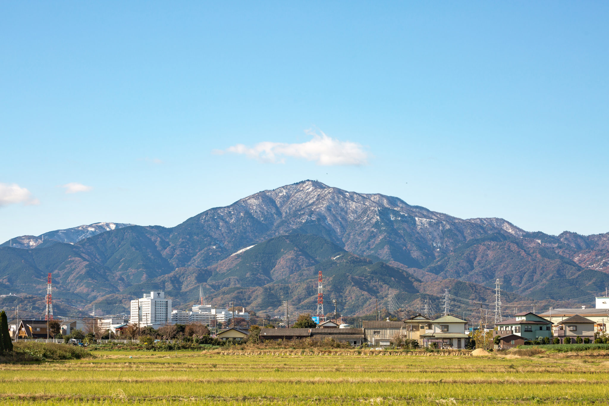
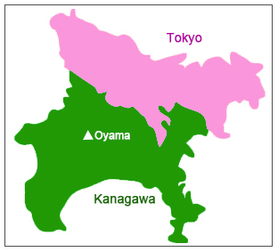

Yokohama
Minha cidade — há 3 anos
Escreva sua história aqui...
3 anos morando em Yokohama
Minha cidade — há 3 anos
Escreva sua história aqui...
30 minutos de casa
Escreva sua história aqui...
A cidade da comida
Escreva sua história aqui...
Os cervos sagrados
Escreva sua história aqui...
Porto e wagyu
Escreva sua história aqui...
Minha primeira cidade no Japão


Isehara foi onde tudo começou. Uma cidade silenciosa que me recebeu de braços abertos — e foi aqui que aprendi o que significa viver no Japão de verdade, longe do turismo e perto da vida cotidiana.
A montanha Oyama foi minha primeira grande impressão. Vista da cidade, ela parece te abraçar — e foi exatamente assim que me senti: acolhida.
Foi em Isehara que aprendi os costumes japoneses, o silêncio respeitoso, a gentileza discreta, o ritmo diferente de tudo.
Escreva sua história aqui...